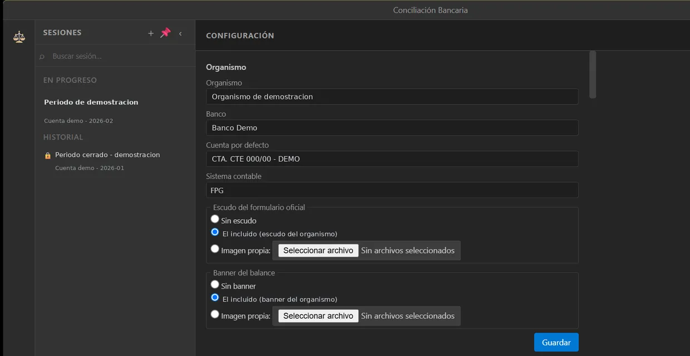

El cierre bancario del mes se hacía a mano en Excel: dos hojas abiertas, coincidencias marcadas con colores, el informe armado a pulso, sin historial. Unas tres horas por mes. Hoy es una aplicación que baja ese cierre a menos de media hora, sobre entre 150 y 500 movimientos mensuales.
Casos de uso
- Importar el libro banco desde Excel y el extracto desde CSV, Excel o PDF, y verlos en paneles lado a lado.
- Asociar movimientos uno a uno, uno a varios, varios a uno y varios con varios, sin usar nada dos veces.
- Recibir sugerencias de un motor determinístico que explica cada propuesta — y explica también por qué no encuentra.
- Arrastrar lo pendiente al mes siguiente y ver la diferencia explicada por partida, no como un número suelto.
- Emitir informe, prueba de caja, formulario oficial y balance, con exportación a PDF y Excel.
Medidas
Electron 44 · React 18 · TypeScript · SQLite local · tablas virtualizadas · ExcelJS · pdfjs · Vitest · Playwright · actualización automática
Es el sistema que más dice sobre cómo trabajo, porque empezó siendo el peor. La primera versión conciliaba usando una sola señal e ignoraba datos que ella misma guardaba. La audité, escribí las cinco causas y descarté el motor entero en lugar de parcharlo.
Lo que vino después se construyó con especificación previa y tests antes del código. El diagnóstico sigue escrito: no lo borré, es parte del historial.
